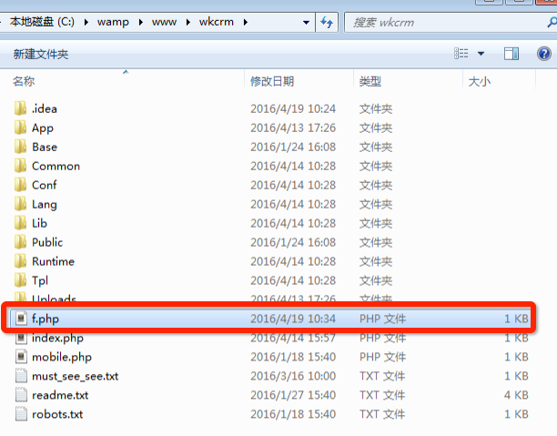
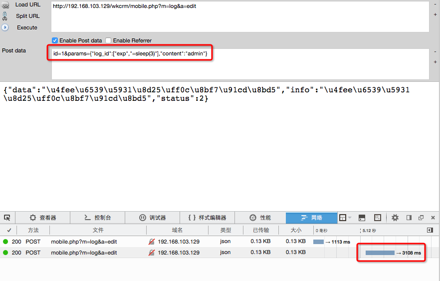

0x00 漏洞介绍
悟空CRM是国内知名开源CRM。提供开源免费版本、旗舰版、云平台版本等。支持本地部署、SaaS模式。此次分析的三个漏洞均属于高危漏洞，并且各有特点。
漏洞如下：
0x01 漏洞分析
漏洞1，悟空CRM SQL注入导致getshell漏洞
此漏洞需要登录，因此不是无权限的。但是利用sql注入getshell的方式却利用了一个不常见的技巧，此技巧曾在ctf（三个白帽ctf游戏）出现。
在文件 \App\Lib\Action\BusinessAction.class.php 664 行
|
|
此处出现了很明显的sql拼接情况，但是此处拼接的位置非常尴尬，是在limit参数后。
我们来说下sql注入在limit参数后的情况。
mysql中，limit的意思为
|
|
mysql中，在limit参数化能实现的功能有限，目前已知可利用的方式为三种。
- 报错注入（mysql 5.6以下）
- 延时盲注（mysql 5.6以下）
- 直接写文件
前两种利用参见 http://www.freebuf.com/articles/web/57528.html
直接写文件是利用了 limit 后可以拼接 into outfile的特性。
我们访问如下url
|
|
可以在文件目录看到

由于此利用方式需要依靠前面select的内容，因此此getshell的方式比较特殊。不像union select后的into outfile一样灵活。
漏洞2，悟空CRM从无任何权限到Getshell漏洞
第二个漏洞的关键点为低强度的加密key。
文件 App/Lib/Behavior/AuthenticateBehavior.class.php
|
|
从上面代码可以看到
|
|
若上式成立，即能完成session赋值操作。
以管理员为例：
$user[‘user_id’] ： 已知，为1
$user[‘name’] ： 已知，为admin
$user[‘salt’] ： 未知
cookie(‘salt_code’) ：已知，为我传入的cookie
那么，实际上这个if语句只有一个参数是未知的，那就是salt。我们看看salt是怎么生成的：
在文件 /App/Lib/Action/InstallAction.class.php 216行：
|
|
salt只和time()有关的，也就是说，只要知道了安装的时候的时间，就可以知道管理员的salt。
那么，如何知道安装的时间呢？
1.跑，猜测。运气最差为 36^^4次
2.通过Last-Modified得知
在HTTP协议里，当我们请求一些静态文件的时候，服务器默认会将这个文件的修改时间作为Last-Modified这个头的值返回。
具体利用参见 http://www.wooyun.org/bugs/wooyun-2016-0193223
本文想说的是，弱key存在被破解的风险。
漏洞3，悟空CRM无需任何权限的SQL注入漏洞
此漏洞为暗含一个ThinkPHP特性的漏洞。
在文件 /App/Lib/Mobile/LogMobile.class.php
|
|
这里create方法先获取所有$params，并根据POST中传入的主键（log_id）来update数据库。而update的where实际上就是 array(‘log_id’, $params[‘log_id’]);
只要我传入的$params[‘role_id’]的值是数组，并且数组的第一个参数是exp，那么第二个参数就可以直接填SQL注入语句。
POC为
http://192.168.103.129/wkcrm/mobile.php?m=log&a=edit
id=1¶ms={“log_id”:[“exp”,”=sleep(3)”],”content”:”admin”}
